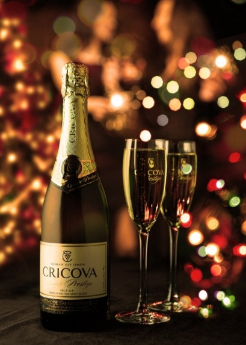

Яркие шумные приемы или уютное семейное мероприятие в кругу любимых и дорогих людей, особенные и по-настоящему Важные события всегда требуют достойного обрамления. Возможно ли представить себе изысканный праздник без искрящихся пузырьков шампанского или бокала потрясающего вина, чьи вкус и качество станут безусловным отражением статуса и истинного благородства хозяина в глазах его гостей.
Несмотря на поистине выдающиеся достижения в области виноделия "CRICOVA" не стоит на месте. В 2013 году, сохраняя безусловную преданность традициям, "CRICOVA" не упускает возможность радовать своих поклонников обрамлением своей продукции в новый, стильный дизайн, отражающий все грани шика и превосходства, верность традициям и ценности исторических особенностей компании.
Одним из важнейших факторов, дарящих коллекционным, марочным и шампанские винам "CRICOVA" свой особый шик и неподражаемые вкусовые качества является выдержка в подвалах Винного комбината "CRICOVA". Самое крупное в мире естественное винохранилище, находящиеся под защитой UNESCO, является местом приготовления всех без исключения позиций "CRICOVA" начиная с ординарных вин, до вин высшей категории и домом уникальной винотеки. Сейчас в коллекции на хранении находится 1 млн. 600 тыс. бутылок, стоимость которых неисчислима. Самые старые - вино десертное Пасхальное Иерусалимское (1902 г.) и ликер "Yan Bekher" (1902 г.).
"CRICOVА" - единственное в Молдове и одно из четырех во всем СНГ предприятие, которое с 1956 года производит шампанское классическим французским методом – бутылочное брожение с выдержкой до трех лет.

С помощью этого продукта специалисты "CRICOVА" подчеркнули чрезвычайный потенциал местного сорта – feteasca albă (фетяска алба), который выращивается на собственных виноградниках, расположенных в центральной зоне Молдовы.
Вино отличается искрящимся, светло-соломенным цветом, сортовым, гармоничным букетом, а также полным, прекрасно сбалансированным вкусом с красивой игрой пузырьков. Свежий вкус оставляет долгое, приятное, очень деликатное послевкусие с цветочным ароматом, который содержит ноты груши, яблока, персика и цитрусовых. Это вино прекрасно сочетается с фруктовым салатом, желе и шоколадными изделиями, а также отлично подойдет в качестве аперитива.